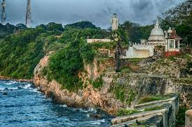
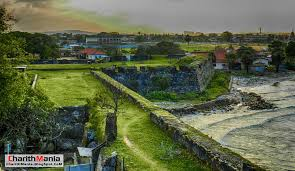
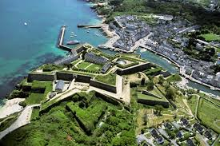

Trincomale Fort
 
Fort Fredrick ,also known as Trincomalee Fort or Fort of Triquillimale, is a fort built by the Portuguese at Trincomalee, Eastern Province, Sri Lanka,
completed in 1624 CE, built on Swami Rock-Konamamalai from the debris of the world-famous ancient Hindu Koneswaram temple (Temple of a Thousand Pillars).
The temple was destroyed by the Portuguese colonial Constantino de Sá de Noronha under Phillip III, occupier of the Jaffna kingdom and Malabar country on the island.
On the Konamalai cape was also built a new village of Portuguese and Tamil people, 50 Portuguese soldiers and inside the fort,
a church named after "Nossa Senhora de Guadalupe". The Fort of Triquillimale was dismantled and rebuilt by the Dutch in 1665, renamed Fort Fredrick.
Several Hindu shrines in the Tamil country were destroyed during the occupation, particularly under Philip II,
when Trincomalee became the scene of naval battles during Europe's Thirty Years' War.
King Ethirimana Cinkam of the Jaffna kingdom had resisted a call by D.
Jerónimo de Azevedo in 1612 to aid the latter in building a fortress in Trincomalee. The enterprise was abandoned.
With the defeat of King Cankili II, all of the territory of the kingdom of Jaffna, comprising Trincomalee and Batticaloa,
was assigned to the "spiritual cures of the Franciscans." This decision was taken by the bishop of Cochin,
fray Dom Sebastião de S. Pedro.[3] By the end of 1619, a small Danish fleet had arrived at Trincomalee;
in May 1620, the Danes occupied Koneswaram temple and began works for the fortification of the peninsula before being defeated.
 Location (Trincomale Fort - Fort Fredrick )